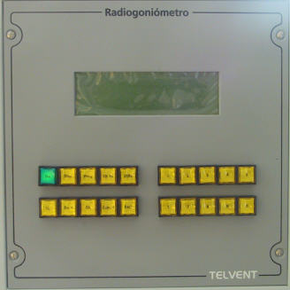
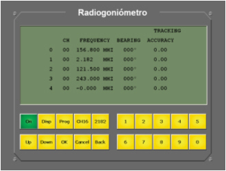

RDF
El módulo de RDF simula un equipo radiogoniómetro real que proporciona al operador detecciones de emisiones radio U/VHF y MF/HF en hasta cinco canales de radiofrecuencia.
La versión hardware y la versión software son idénticas en su funcionamiento y presentación de datos, únicamente difieren en la forma de acceso que en el primer caso es a través de botones físicos reales y en el segundo caso son botones software de acceso directo a través de una pantalla táctil.
Versión Hardware:

Versión Software:

El módulo de RDF se compone de los elementos siguientes:
- Pantalla (LCD) de ocho líneas que muestra la información al operador.
- Teclado funcional de 20 teclas que permite utilizar todas las funciones del equipo.
Mediante la fila superior del bloque de teclas de la izquierda (excepto el pulsador de Encendido / Apagado), el operador puede acceder a la configuración del display y puede realizar la programación de canales del equipo.
El bloque de teclas de la derecha es un teclado numérico para la introducción de valores, y la fila inferior del bloque de teclas de la izquierda son teclas para la edición de campos, necesarias en las pantallas de configuración y programación del equipo. El funcionamiento general de estas teclas es el siguiente:
Cuando el operador accede a cualquiera de las pantallas de configuración, aparece seleccionado para edición el primer campo editable de la misma. Mediante las teclas numéricas el operador puede introducir el nuevo valor deseado. Mediante el pulsador de validación (Ok), se acepta el valor introducido y se pasa a editar el siguiente campo de la pantalla. Mediante el pulsador de retorno (Cancel), se cancela el valor introducido en el campo en edición, y se pasa a editar el campo anterior. Mediante la tecla retroceso (Back) se borra el último valor numérico introducido. El campo en edición es indicado siempre mediante un cursor intermitente. Mediante las teclas de flechas hacia arriba y abajo se posibilita cambiar de campo en edición.
A continuación se describe con detalle el manejo de este equipo:
- Identificador del canal (CH).
- Frecuencia del canal (FRECUENCY).
- Marcación de la detección en este canal (BEARING).
- Intensidad de la señal detectada en este canal (ACCURACY).
- BRIGHTNESS: nivel de brillo del display de 0 a 9.
- CONTRAST: nivel de contraste del display de 0 a 9.
Pulsador e Indicador de ON / OFF del RDF: debe ser pulsado para encender o apagar el equipo. Cuando el equipo es encendido, muestra la pantalla de detecciones de emisiones radio, con la última programación de canales realizada, incluyendo los siguientes datos por cada uno de los cinco canales:

Pulsador de Programación de Canales (Program) del RDF: mediante este pulsador se accede a la pantalla programación de canales del RDF. Mediante las teclas numéricas y de edición el operador podrá seleccionar los cinco canales monitorizados mediante sus identificadores correspondientes.
Una vez finalizada la selección de canales se debe pulsar de nuevo la tecla Program Para salir de este modo y volver a la monitorización de los canales programados.
Pulsador de Canal 16: mediante este pulsador se programa automáticamente el Canal 16 como el canal número 3 de entre los monitorizados, sin necesidad de entrar en la pantalla de programación de canales.
Pulsador de 2182: mediante este pulsador se programa automáticamente la frecuencia de HF 2182 kHz como el canal número 4 de entre los monitorizados, sin necesidad de entrar en la pantalla de programación de canales.
Pulsador de Display: mediante este pulsador se accede a la pantalla de configuración de los niveles de brillo y contraste del display. Mediante esta pantalla el operador puede realizar los siguientes ajustes del display: